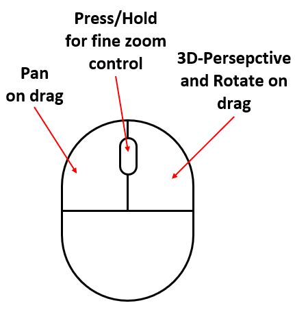
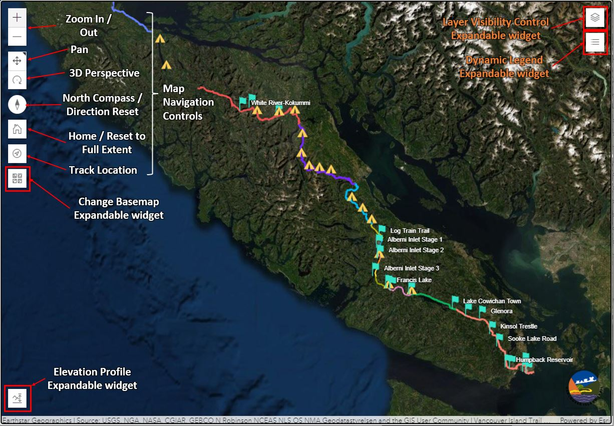

Final Products Showcase
Deliverable 2: Interactive Web Map
The end product is a stand-alone interactive web-map application usable on Desktop (intended) or mobile browser with the following features:
- On-Screen or Mouse (see right image) Navigation controls: Provides user flexibility in viewing trail in desired perspectives (Zoom, Pan, Rotate, 3D perspective, Direction reset, home button, location tracking) 
- Changeable Base maps: Flexibility on what surface user may overlay the trail data on
- Elevation Profile and Elevation Data: Useful metrics for planning such as slope, elevation gain, length of a selected or custom sketched profile on the map, in preferred units
- Layer Visibility Control: User flexibility in map visual
- Dynamic Legend: Shows feature keys only to visible data within current window extent
- Viewable Attribute Data: Feature attributes and available spatial data upon click
Click on image below to open the interactive web-map application
Deliverable 3: Offline Map Data
The end product is a list of downloadable 30-inch by 30-inch Georeferenced PDFs Gase Maps（all 60 pdfs: PDF_Maps_ALL.zip ）and Feature Layer Data Files in KML/KMZ Format (all 12 external individual KMZ files: External_KMZ_ALL.zip ) including:
- One PDF base map in 1:500,000 scale: Download Scale_500k.pdf
- Nine PDF Base Maps in 1:100,000 Scale
- Download sample maps Scale_100k_01.pdf, Scale_100k_02.pdf, and Scale_100k_03.pdf
- Download all 9 maps: Scale_100k_ALL.zip
- Fifty PDF base maps in 1:20,000 scale
- Download sample maps Scale_20k_01.pdf, Scale_20k_02.pdf, and Scale_20k_03.pdf
- Download all 50 maps Scale_20k_ALL.zip.
- Twelve (External) Feature Layer Data Files in KMZ Format (For Public Viewing and Download)
- Download sample individual layers in KMZ Campsite.kmz, Limestone.kmz, Section 1.kmz, and Waterbody.kmz;
- Download a Navigation Package in KMZ VITA Navigation Package.kmz, which includes 8 layers (6 Trail Section layers, a Campsite layer, and a Trailhead & Parking layer)
- Four (Internal) Feature Layer Data Files in KMZ Format (not For Public Viewing and Download)
Image Caption